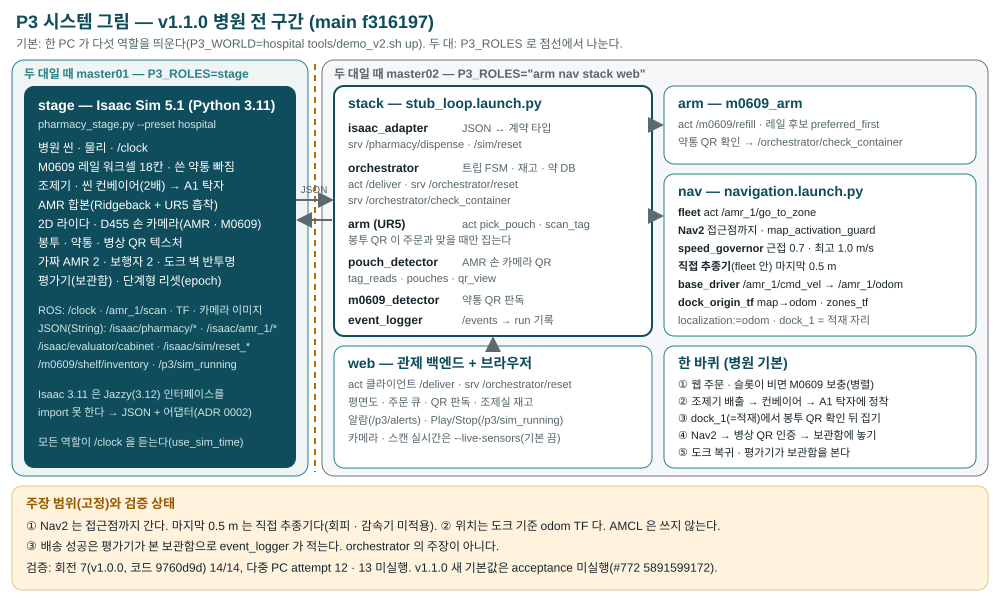

M0609 보충 · UR5 픽·플레이스 · AMR 배송 — ROS 2 Jazzy로 한 바퀴를 잇다
임재범 · 전제환 · 이태규 · 박세준 | 2026-09-30
문장 확정 필요 — 대응표 빈칸 8
초안: 실제 병동·로봇 없이 로봇 간 인터락, 실패·리셋, 반복 측정을 같은 조건으로 되풀이할 수 있다. (실제 병원 작업량·오류율은 미확인이라 "현실 복제"는 주장하지 않는다.)

Isaac 5.1 내부 Python 3.11 이 ROS 2 Jazzy(3.12) 인터페이스 패키지를 import 하지 못한다 → Isaac 은 JSON 토픽, 어댑터가 계약 타입으로 옮긴다.
SUCCESS 는 orchestrator 의 주장이 아니라 평가기가 본 보관함으로 event_logger 가 쓴다.
계약 합격 한 PC · 다중 PC 한 바퀴(회차19: master01 stage + master02 나머지)
주장 범위(고정)
① Nav2 는 접근점까지, 마지막 0.5 m 는 직접 추종기(장애물 회피·감속기 미적용)
② 위치 추정은 시뮬 도크 기준 TF(odom), AMCL 미사용
| 층 | 사용 |
|---|---|
| OS · 미들웨어 | Ubuntu 24.04 · ROS 2 Jazzy · rmw_fastrtps |
| 시뮬레이터 | Isaac Sim 5.1.0 (Python 3.11) · OmniGraph ROS2 브리지 |
| 주행 | Nav2 (controller · costmap · map_server) + 자체 waypoint 추종기 |
| 팔 제어 | 자체 IK(UR5) · M0609 레일 계획(IK + 여유 거리) |
| 비전 | OpenCV QR · HSV 폴백 · YOLO(선택, 가중치 없음) |
| 로봇 | Doosan M0609 (3축 레일) · Ridgeback + UR5 · 흡착 그리퍼 |
| 관제 | 웹 백엔드(ROS 브리지) · 정적 프론트 |
| 검증 | colcon test(L1·L2) · GitHub Actions CI · evidence 스키마 |
| 하드웨어 | RTX 5080 Laptop 16 GB (master01·02) |
+ sim/ (Isaac 스테이지) · web/ · tools/ (run 집계·판정)
코드로 만드는 장면: 선반 4 · 약통 16 · 3축 레일 M0609 · 조제기 · 컨베이어 · AMR 합본. 전 구간 ①–⑩은 여기서 돈다.
병원 USD 위에 병원 M0609 워크셀(실측 JSON) · 씬 컨베이어(표면 속도를 직접 써서 A1 롤러 끝까지) · A1 옆 load 에서 합본 집기 · Nav2. 지도·zones·routes 는 USD 에서 뽑는다. 전 구간 한 바퀴는 리하 v0(14장) — 통과(두 장비)
| 대상 | 설정 |
|---|---|
| 벨트 | kinematic 강체 + collider · 속도 ratio 1.000 (5/5) Isaac |
| M0609 레일 | Base 50 kg · Carriage 10 kg |
| 약통 · 봉투 | 0.1 kg · 0.02 kg |
| 물리 스텝 | 1/60 s |
| 마찰 | 미측정 주력 스테이지에 재질 없음 |
| 파지 | 물리 파지 아님 — 거리 판정 attach |
/m0609/refill 수락 → 재고 JSON 에서 칸 선택 → IK + 여유 거리 계획 → 팔 접힌 자세에서만 레일 이동 → 파지 → holding 2.0 s 확인 → 이송 중 낙하 검사 → 홈 → 결과
센서가 바꾸는 결정: joint_states(도착 0.05 rad) · rail(0.01 m) · holding(파지·낙하) · 재고(칸 선택)
인터락(base/stopped · 벨트 끝 · order_id) → 검출 대기 → 경유 자세 → 접근 → IK 파지 → 흡착 ON → holding 확인 → 들기(낙하 검사) → 놓기 → 해제 → 결과 뒤 홈
GoToZone → 팔 at_home 1 s 안 확인(아니면 출발 거부) → Nav2 로 회전 가능한 접근점까지 → 0.5 m 안이면 Nav2 goal 거두기 → waypoint 추종기로 고정물 옆 0.05 m 정차(이 0.5 m 는 장애물 회피·감속기 미적용) → odom 정지 0.5 s · 공차 안이면 arrived
위치 추정: 시뮬 도크 기준 TF(odom). AMCL 은 쓰지 않는다.
| 값 | 이유 · 전후 |
|---|---|
| 도착 공차 0.02 | 정차 오차 0.14 → 0.019 m (#407) |
| 속도·가속 80% | Nav2 상한 대비 (#453) |
| 경로 반경 0.56 | 반길이+받침 → 문 여유 0 이었다 (#504) |
| 넘김 0.5 m | 정차 자리에 Nav2 궤적 없음 (#508·#514) |
| 로컬 static layer | 라이다 옆·뒤 사각 |
| 속도 두 배 → 되돌림 | 두 배 7바퀴 touch 6 · 원래 속도 7바퀴 touch 0 (#526→#547) |
| inflation 1.5 · footprint | 복도 가운데로(#542) · footprint 근거 문서 없음 |
손 카메라 → pouch_detector: OpenCV QR 다중 판독 → 접두 ord-/pt-/st- 분류 · YOLO(fail-closed) 또는 HSV → 픽셀+폭 깊이 → 봉투 자세
YOLO 가중치 없음 · 빈월드 카메라 L3 1회 불통과(QR 한 변 58–61 px 판독 실패), 잘못된 봉투 거부 qr_mismatch 는 동작(실습41) · 윗면 QR GUI 캡처 해독 1장(실습39)
스테이지가 봉투 prim 자세를 읽어 판정 영역 안 · 정지한 것만 검출로 낸다 · AMR 자세로 침상 인식표 판독
lap12–16 빈월드 시연, 병원 리하 v0 집기도 이 경로다
D455 = 약통 QR 확인(M0609 손 카메라, 보충 전 장착 허용·거부) · UR5 집기 = 시뮬 센서 좌표(참값 센서)
| 손 카메라 | rtf | GPU |
|---|---|---|
| 켬 (23b) | 0.925 | 99 % |
| 끔 (24m) | 0.992 | 74 % |
카메라 판독률: 측정 중(#527 AI 비전: 한 장 찍기 판독률)
미검증 M0609 보충과 AMR 한 바퀴를 같은 장면에서 동시에 · AMR 2대
한계(INTEGRATION_ONLY): 참값 센서 · 거리 판정 흡착 · 1인 1건 · bed_a1 · 빈월드 · 한 PC
| 단계 | 무엇을 도나 | 통과 | 상태(9/23 22:30) |
|---|---|---|---|
| v0 | 참값 센서로 전 구간 한 바퀴 | DELIVERED, touch 0, 창 모드 녹화 | 통과(두 장비) 리하01·02 끊김 → 넷 통과(35fb28a·5cb6542·94f19fb·+rail·05339c9, 회차마다 따로) → f8eac1c 5/5: master02 1회·master01 2회 |
| v1 | 카메라 인식(봉투·약통 QR) · 침상 열 곳 · 1350개 진열 · 시드 배치 | v0 + 카메라로 집기·확인, 침상 임의 3곳 | 미실행 |
| v2 | 주문 10건 연속(긴급 끼어듦·재보충) · 간호사 화면 · 평면도 · 촬영 | 10건 DELIVERED, 영상 | 미실행 |
확정 원인 — ① GPU 전력 80 W 상한(최대 78.5 W) ② joint_states 수신 공백 0.67–1.13 s 를 팔 시한으로 셌다(35fb28a) ③ 참값 센서가 세계 속도로 정지를 본다 — 병상에서 speed=0.1056 > 0.02 로 보류 수정 SHA 대기
회차 기록: docs/reha/reha-NN.md — 다섯 장면(② 보충·약통 QR · ③ A1 적재 · ④ 이동 · ⑤ 내려놓기 · ⑥ 복귀) 도달표. 통과 회차: f8eac1c(reha-02 H·I), 촬영 대표 master02 clip-2.mkv
봉투를 벨트 방향 0.05–0.15 m · 옆 ±0.04 m · yaw ±0.3 rad 에서 (seed, epoch, index) 로 뽑는다. M0609 보충 칸도 시드로 무작위 선택.
측정 중(#527 통합·동적: 랜덤 스폰 범위 — 시드 N × 성공·실패)
| 실행 | 조건 | 성공/시도 | 상태 |
|---|---|---|---|
| 조제실 pilot | protocol frozen 9/19 · master01 · 2 SHA | 6/6 · lap 12.3–13.3 s | Isaac |
| 빈월드 lap13 | main · 창 모드 | 2/3 | Isaac |
| 빈월드 lap14–16 | #469 뒤 · 3 SHA · 창/headless | 9/9 | Isaac |
| M0609 보충 | 실습21 · 시연일 | 78/79 | Isaac |
| 병원 Nav2 | 7회차 · 머지 전 트리 | 6/6 goal · 1회 | 미검증 |
| 병원 v0 한 바퀴 | f8eac1c · 두 장비 | 2/2 다섯 장면 5/5 | Isaac |
| 합본 대수 부하 | 배송 1 + 대기 N−1 · master01 | N=1–4 완주 · rtf 0.45→0.27 | Isaac |
| 병동 acceptance | 12회 protocol | — | 미실행 |
측정 중(#527 통합·동적: 성공률 표 — 시행·실패·원인)
막으려는 것 → 재는 값 → 기준
표본이 작아 성공률 신뢰구간은 말하지 않는다.
REFILL_DONE 이 ok — 안착을 보지 않는 성공 판정 #397 열림한계 1회 · 머지 전 트리 · d_xy 는 fleet 값 · 마지막 고침은 씬 · 정적 환경
측정 중(#527 챌린지: 8회차 반복·참값)
docker ros:jazzy-ros-base-noble 에서 확인(7ac85b7, 225 tests). CI 가 같은 명령을 돈다.
측정 중(#527 설계·납품: 깨끗한 클론 재현)
동결(9/28 18:00) 뒤 이 목록을 다시 쓴다